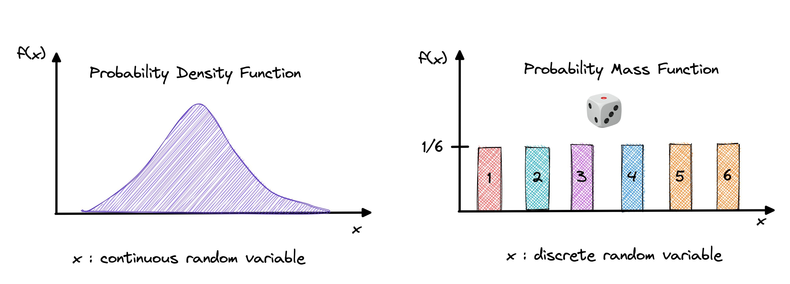
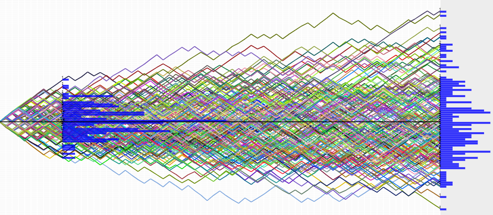
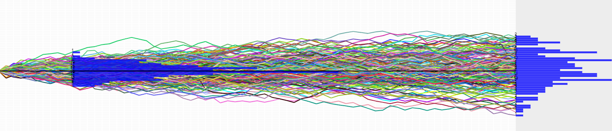
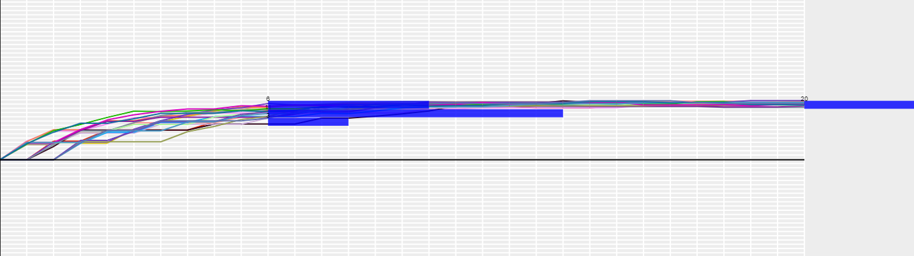

Stochastic processes serve as crucial mathematical models for understanding the evolution of systems over time, incorporating
inherent random variations. This mini_Thesis explores the fundamental concepts, properties, examples, and applications of stochastic
processes, with a specific focus on stochastic differential equations (SDEs).
Stochastic processes
A stochastic process is a mathematical model that represents the evolution of a system over time in a way that is subject
to random variations. In simpler terms, it's a collection of random variables indexed by time. A stochastic process can be;
discrete-time or continuous-time.
In discrete-time, the random variables evolve at distinct, separate points in time, while in continuous-time,
they evolve continuously.
Continuous distributions are associated with random variables that can take any value within a specified range. For example,
length x = 2.567 mm and temperature t = 12.57 K. Continuous distributions are typically described by the probability density function (PDF)
which is a function that is used to calculate the probability that a continuous random variable will be less than or equal to the value
it is being calculated at: Pr(a≤X≤b) or Pr(X≤b).
Discrete distributions deal with random variables that can only take distinct values. It is a variable that has a value with finite
(integer) interval. For example, the number of people in a family = 4 people. These distributions are defined by probability mass
functions. The probability mass function (PMF) calculates the probability that the random variable will assume the one specific value
that it is being calculated at: Pr(X=a).

Stochastic processes have several properties:
A stochastic process is stationary if its statistical properties remain constant over time. In other words, the mean, variance, and correlation structure of the process do not change. For example, a white noise process is stationary, while a random walk is not. The white noise process models a random signal with constant mean and variance, and its value at any time has the same distribution as its value at any other time. The random walk models the path of an individual who moves randomly in a space, and its value at any time depends on the previous steps, and thus has a different distribution as time goes by.
A stochastic process is continuous if its sample paths are continuous functions of the index set. This means that there are no jumps or breaks in the values of the process. For example, the Brownian motion is a continuous stochastic process, while the Poisson process is not. The Brownian motion models the random movement of a particle in a fluid, and its position at any time is a continuous function of time. The Poisson process models the number of events that occur in a time interval, and its value at any time is a discrete function of time, which can change abruptly by one unit.
A stochastic process has the Markov property if the future behavior of the process only depends on its current state, and not on its past history. For example, a Markov process is Markovian, while a Gaussian process is not. The Markov process models a system that transitions between a finite number of states, and its value at any time depends only on its value at the previous time, and not on the entire history. The Gaussian process models a system that has a continuous state space, and its value at any time is a Gaussian random variable, whose mean and variance depend on the entire history of the process.
A stochastic process is independent if its increments are independent random variables. This means that the future values of the process do not depend on the past values. For example, a Poisson process is independent, while a Markov process is not. The Poisson process models the number of events that occur in a time interval, and its increment in any time interval is independent of its value before that interval. The Markov process models a system that transitions between a finite number of states, and its value at any time depends only on its value at the previous time, and not on the entire history.
A stochastic process is a martingale if its expected value at any future time, given its current value, is equal to its current value. A martingale is a fair game, where the player cannot gain or lose any advantage by knowing the past outcomes. For example, a coin toss is a martingale, where the outcome of each toss is independent and has a 50% chance of being heads or tails. If we let Xn be the random variable that represents the outcome of the nth toss, where Xn = 1 if heads and Xn = -1 if tails, then the sequence X1, X2, X3, … is a stochastic process. If we let Sn be the sum of the first n tosses, then the sequence S1, S2, S3, … is also a stochastic process, and it is a martingale. This is because the expected value of Sn+1, given the previous values, is equal to Sn, regardless of the value of Sn. For example, if we have tossed the coin four times and obtained S4 = 2, then the expected value of S5 is E(S5 | S4 = 2) = 2, regardless of whether the fifth toss is heads or tails.
A stochastic process is said to be ergodic if the time average of a random variable, computed along a single sample path, converges to the expected value as the time horizon goes to infinity. In other words, the ergodic property means that the long-term behavior of the system is independent of the initial conditions, and that the system explores all the possible states with equal probability. One example of an ergodic system is a fair dice, where the outcome of each roll is independent and has a 1/6 chance of being any of the six faces. If we let Xn be the random variable that represents the outcome of the nth roll, then the sequence X1, X2, X3, … is a stochastic process. If we let Sn be the sum of the first n rolls, then the sequence S1, S2, S3, … is also a stochastic process, and it is ergodic. This is because the expected value of Sn/n, which is the time average of Xn, is equal to 3.5, which is the ensemble average of Xn over the state space {1, 2, 3, 4, 5, 6}.
Poisson processes and Markov processes are exemplars of stochastic processes, with Poisson processes modeling the occurrence of events in fixed intervals and Markov processes representing systems where future states depend solely on the present state.
Application
They are used to study complex and uncertain situations in many fields, such as biology, chemistry, ecology, neuroscience, physics, image processing, signal processing, control theory, information theory, computer science, cryptography and telecommunications.
Machine learning: Stochastic processes are used to model and reason about physical and engineering systems.
Queuing theory: Queuing theory is the mathematical study of waiting lines. It is used to analyze and model systems of customers arriving at a service facility, waiting in line (queue), and being served.
Cryptography: Stochastic processes are used in cryptography to generate random numbers and to model the behavior of cryptographic systems.
Stochastic Differential Equations
Stochastic Differential Equations are differential equations that involve both deterministic and random components.
They provide a way to describe how systems evolve over time when influenced by both deterministic forces and random fluctuations.
So, SDEs are used to model the evolution of systems where randomness plays a significant role.
The general form of a one-dimensional SDE is given by:
\[ dX_t = a(t, X_t) \, dt + b(t, X_t) \, dW_t \]
where \(X_t\) is the process, \(a(t, X_t)\) and \(b(t, X_t)\) are deterministic functions, \(dt\) represents the deterministic part, and \(dW_t\) represents the random part (Brownian motion).
The Brownian motion, also known as Wiener process, is a continuous-time stochastic process that has independent and normally distributed increments. Brownian motion can be also considered as the generalization of a Randomwalk with jump according to the normal distribution. So, it is a scaling limit of the Randomwalk for n goes to infinity.
The solution to an SDE is a stochastic process. To find it we will use Itô calculus but it is difficult to solve, for this reason we simulate it.
Itô calculus, named by Kiyosi Itô, is an extension of calculus to stochastic processes such as Brownian motion, with applications in mathematical finance and stochastic differential equations.
Types of SDE:
Linear vs. Non-linear:
- Linear: Linear SDEs are those in which the drift and diffusion functions are linear functions of the stochastic variable and time. An example of a linear SDE is:
\[ dX_t = a(t)X_t \, dt + b(t)X_t \, dW_t \]
Where \(a(t)\) and \(b(t)\) are functions of time.
- Nonlinear: Non-linear SDEs are those in which the drift and diffusion functions contain nonlinear terms with respect to the stochastic variable. For example:
\[ dX_t = \sin(X_t) \, dt + X_t^2 \, dW_t \]
Autonomous vs. Time-Dependent:
- Autonomous: Autonomous SDEs are those in which the drift and diffusion functions do not explicitly depend on time. For example:
\[ dX_t = a(X_t) \, dt + b(X_t) \, dW_t \]
- Time-Dependent: Time-dependent SDEs include drift and diffusion functions that change over time. For example:
\[ dX_t = a(X_t, t) \, dt + b(X_t, t) \, dW_t \]
Examples
Some of the most important SDEs are: (we will see pics & simulation of the first 3 only)
Arithmetic Brownian Motion:
The equation for arithmetic Brownian motion is given by:
\[ dX_t = \mu \, dt + \sigma \, dW_t \]
- \(X_t\) represents the value of the process at time \(t\).
- \(\mu\) is the drift term, representing the average rate of return per unit time.
- \(\sigma\) is the volatility, representing the standard deviation of the random fluctuations.
- \(dW_t\) is a Wiener process or Brownian motion, representing random, continuous, and unpredictable movements.

N=70, M=200, P=0.5
Geometric Brownian Motion (Black–Scholes Model):
The equation for geometric Brownian motion is:
\[ dS_t = \mu S_t \, dt + \sigma S_t \, dW_t \]
- \(S_t\) is the stock price at time \(t\).
- \(\mu\) is the average rate of return.
- \(\sigma\) is the volatility.
- \(dW_t\) is a Wiener process.

N=70, M=200, P=0.5, sigma=0.5, mu=0.5
Ornstein–Uhlenbeck Process (Mean-Reverting Process):
The equation is:
\[ dX_t = \theta (\mu - X_t) \, dt + \sigma \, dW_t \]
- \(X_t\) is the value of the process at time \(t\).
- \(\theta\) is the speed of mean reversion.
- \(\mu\) is the mean to which the process reverts.
- \(\sigma\) is the volatility.
- \(dW_t\) is a Wiener process.

N=70, M=200, P=0.5, sigma=0.3, mu=10, theta=0,3
Vasicek Model.
Hull–White Model:
It extends the Vasicek model by making the mean reversion and volatility parameters time-dependent.
Cox–Ingersoll–Ross (CIR) Model:
It is similar to the Vasicek model but includes a term proportional to the square root of the process.
Black–Karasinski Model:
The Black–Karasinski model is an extension of the Cox–Ingersoll–Ross (CIR) model. It introduces stochastic volatility,
which means allowing the volatility parameter to vary over time.
Heston Model:
The Heston model is used to describe the volatility of an asset and is defined by two stochastic differential equations, one for the asset price and one for its volatility.
Chen Model:
The Chen model is a more complex stochastic volatility model that considers both jumps and continuous-time processes in the volatility equation.
Application
Stochastic differential equations (SDEs) appear today as a modeling tool in several sciences as telecommunications, economics, finance, biology, and quantum field theory.
In finance, SDEs are often used to model the movement of asset prices.
In physics, SDEs are used to model the Brownian motion of particles in a fluid.
In biology, SDEs can be used to model population dynamics, where the growth of a population is influenced by both deterministic factors (e.g., birth rate) and random factors (e.g., environmental fluctuations).
Simulation
For the practical aspect of understanding stochastic processes, Simulation provides a hands-on approach to visualize and
comprehend the behavior of these processes, improving the learning experience.
We already did a simulation for SDE using "Euler–Maruyama Method" in our Homeworks 2 to 5.